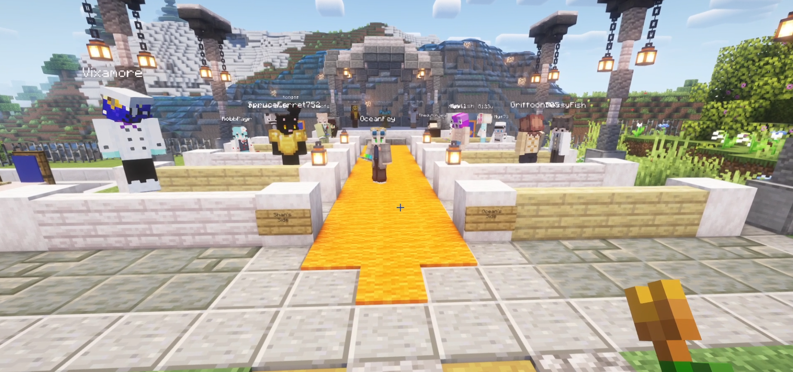
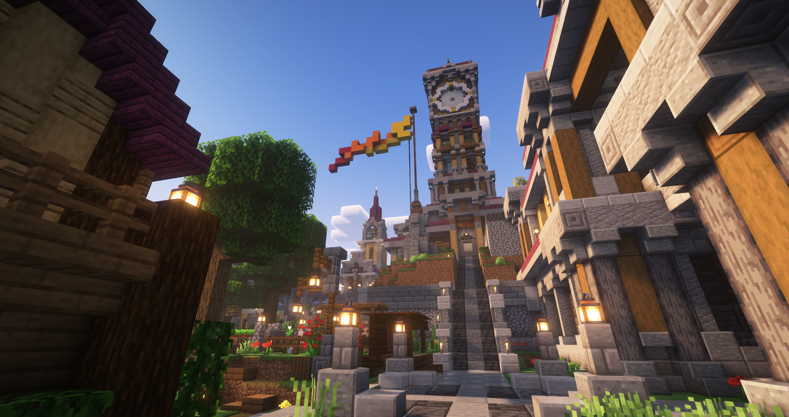
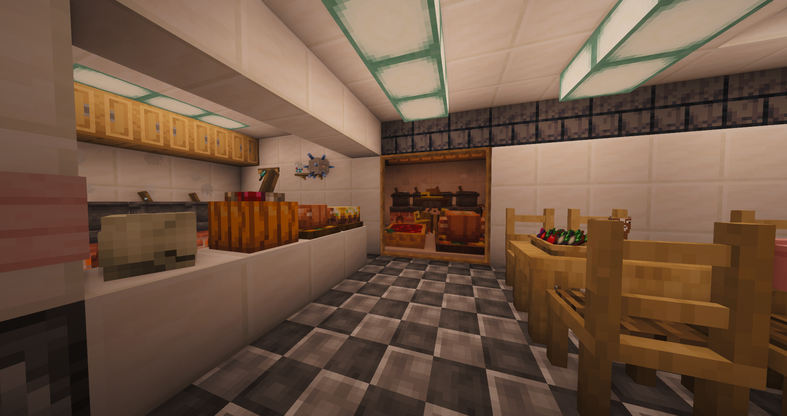
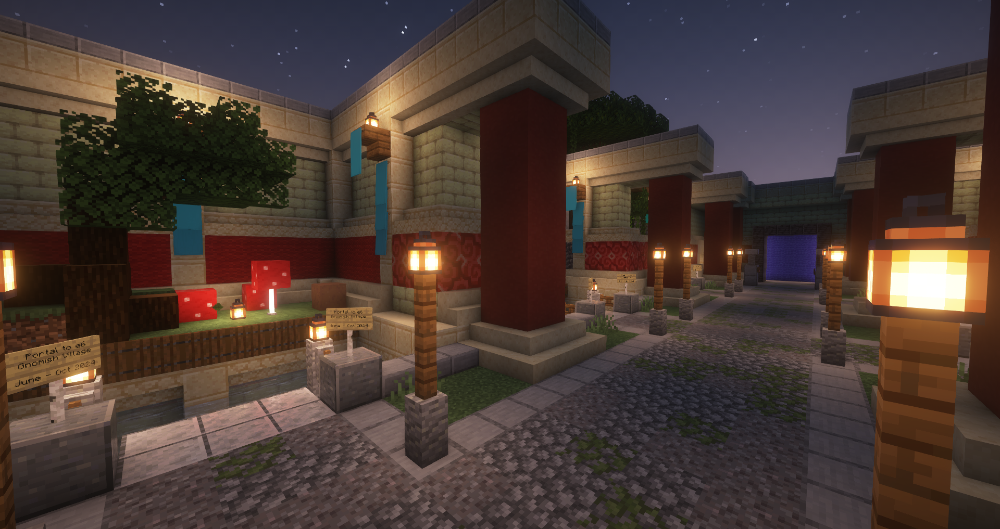

We originally began as NewMineland back in 2010, and after five years of activity, the owners retired the server. Members of that community reunited and founded the 'Minelanders in 2019, and we have continued to build on that established community ever since.

During the summer, we run a public semi-vanilla server, aiming to provide an environment that is both PvP and builder-friendly. Players can earn the protection of plots to build in via our economy and anti-griefing plugins, but unprotected resources are still vulnerable to theft. Player-formed clans and mayoral elections encourage politics and player interaction as well.

For the winter server, we don't publicly advertise, focusing instead on crafting a unique player experience that changes every year, with player input. Previous winters have included All The Mods, Valhelsia, SevTech Ages of the Sky, and Create: Astral.

We host archives of every prior edition of the server that players can revisit at any time in an archive hall. Recent editions are saved on a server Google Drive for players to download for themselves as well, and over 20 previous worlds (going all the way back to 2010) are available by request for any players who want to relive the history of the server.
OUR 8TH ANNUAL SUMMER SERVER WILL OFFICIALLY LAUNCH ON
FRIDAY, MAY 22ND, 2026
COME BE A PART OF OUR VIBRANT COMMUNITY, AND MAKE SOME HISTORY OF YOUR OWN!!